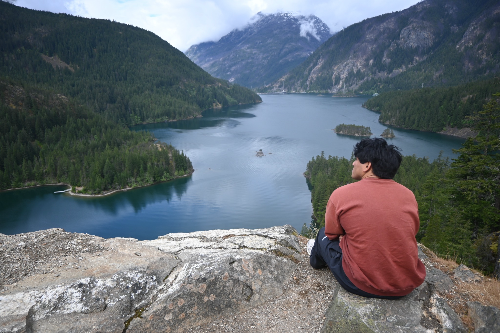

Photos from my travels
Places I’ve been.Moments I kept.
Mountain views, wildlife, and the little things along the way. A collection of my own travel photos.
Explore my travels ↓Explore by destination
Where would you like to go?
65 photographs from my travels.

Parks or city streets?
Olympic National Park
Nearly a million acres of glacier-capped mountains, moss-covered rain forests, and wild Pacific coastline. Olympic’s size and variety make each part of the park feel like a different world.


Wildlife
Bears, bald eagles, and deer from my travels.
Explore wildlife →Behind the camera
Hi, I’m Constantine.
I like getting outside, finding a good view, and taking photos along the way. This is where I’m keeping the moments from my travels.
From mountain trails to city streets and travels abroad, I share my photos, stories, and the moments I want to remember.
Back to the collection